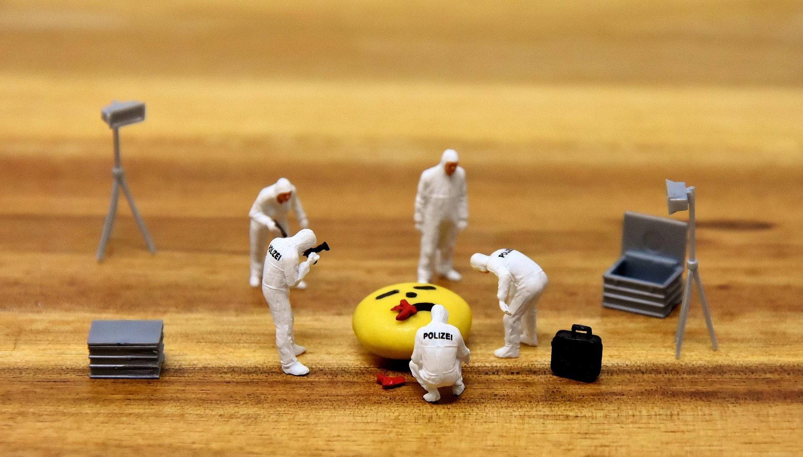

Criminal
Cases
คดีอาญาสะเทือนขวัญ ฆาตกรรมต่อเนื่อง และคดีดังในประวัติศาสตร์กระบวนการยุติธรรมไทย ตั้งแต่คดีประหารชีวิตด้วยดาบครั้งสุดท้ายของสยาม จนถึงคดีฆาตกรรมอำพรางร่วมสมัย สถานะ: CASE FILES OPEN. รายละเอียดบางส่วนถูก คัดกรองเพื่อการศึกษา เท่านั้น
20 คดีในแฟ้ม — หมวดคดีที่ใหญ่ที่สุดในคลัง

คดีเด่นที่ผ่านการยืนยันแหล่งที่มา
คดีหมอฆ่าภรรยาหั่นศพอำพราง (2544)
คดีฆ่าภรรยาหั่นศพอำพราง ปี 2544 — พยานหลักฐานส่วนใหญ่เป็น "พฤติเหตุแวดล้อม" แต่ศาลรับฟังได้ว่าจำเลยฆ่าโดยไตร่ตรอง — ประหารชีวิต
คดีฆาตกรรม น.ส.ศยามล ลาภก่อเกียรติ (2536)
หมอบัณฑิตจ้างวานฆ่าภรรยาตนเองด้วยมือปืน 4 คน — พยานแพจเจอร์มัดตัวบงการที่มือไม่เปื้อนเลือด
คดีความรุนแรงในครอบครัว: เมื่อบ้านไม่ใช่พื้นที่ส่วนตัวเหนือกฎหมาย
คดีเสริม สาครราษฎร์: ฆาตกรรมอำพรางศพและการตีความ "ความรัก" ในทางกฎหมาย
หลวงปู่เณรคำ (2556)
อดีตพระดังใช้ศรัทธาหลอกเงินบริจาคซื้อเครื่องบินเจ็ต หนีสหรัฐฯ ก่อนถูกส่งตัวกลับมารับโทษ
แฟ้มคดีอาญาทั้งหมด
สมคิด พุ่มพวง (2548, 2562)
คดีฆาตกรรมต่อเนื่องสะเทือนขวัญ — สมคิด พุ่มพวง ฆ่าหญิงหมอนวดและนักร้องคาเฟ่ 5 รายปี 2548 พ้นโทษปี 2562 แล้วก่อเหตุรายที่ 6
OPEN FILE →บุญเพ็ง หีบเหล็ก — คนสุดท้ายของสยามที่ถูกประหารด้วยการตัดคอ (2462)
OPEN FILE →คดีนางทองเลื่อน "อีทองเลื่อนหักคอน้องผัว"
OPEN FILE →คดีอ้ายอ่วม อกโรย (2414)
OPEN FILE →คดีสวรรคต ร.8: จุดกำเนิดและบรรทัดฐานนิติวิทยาศาสตร์ไทย
OPEN FILE →คดีตี๋ใหญ่: จอมโจรขมังเวทย์และบรรทัดฐานวิสามัญฆาตกรรม
OPEN FILE →คดีซีอุย: การคืนความเป็นธรรมและศักดิ์ศรีความเป็นมนุษย์หลังความตาย
OPEN FILE →คดีสังหาร 4 อดีตรัฐมนตรี ที่ถนนพหลโยธิน (2492)
ตำรวจอ้างว่าถูก "โจรมลายู" ชิงตัวนักโทษยิงทิ้งกลางดึก — คดีเข้าสู่ศาลช้ากว่าเหตุ 13 ปี ตัดสินลงโทษผู้ลงมือ แต่ผู้บงการตัวจริงไม่เคยถูกจับ
OPEN FILE →คดีเชอรี่ แอน ดันแคน — แพะรับบาปในตำนาน (2529)
ตำรวจจ้างพยานเท็จใส่ร้ายผู้บริสุทธิ์ 5 คน บางคนตายในเรือนจำก่อนศาลฎีกาจะยกฟ้อง — จ่ายชดเชย 26 ล้านบาทหลังผ่านไป 17 ปี
OPEN FILE →คดีนวลฉวี เพชรรุ่ง — ปริศนาสะพานนนทบุรี (2502)
พยาบาลสาวถูกฆ่าโยนศพลงแม่น้ำหลังทะเลาะเรื่องสมรสซ้อน — สะพานที่พบศพถูกเรียกว่า "สะพานนวลฉวี" มาจนถึงทุกวันนี้
OPEN FILE →หมอสุพัฒน์ เลาหะวัฒนะ (2555)
อดีตหมอตำรวจฆ่าอำพรางศพแรงงานเมียนมาฝังในไร่สับปะรดเพชรบุรี ปี 2555 — ศาลสั่งประหารปี 2558 ก่อนหลบหนีข้ามแดน
OPEN FILE →พระนิกร (2533)
พระดังถูกแฉมีบุตรลับ แจ้งความเท็จกลบเกลื่อน สู้คดี 8 ปี
OPEN FILE →พระยันตระ อมโร (2537)
พระดังปาราชิก ปฏิเสธมติสงฆ์ ห่มเขียวหนีสหรัฐฯ คดีหมดอายุความ
OPEN FILE →คดีบรรยิน ตั้งภากรณ์ ฆ่าอำพรางเสี่ยชูวงษ์ (2558-2567)
อดีต รมช.พาณิชย์ แอบโอนหุ้นเพื่อน 300 ล้าน แล้วฆ่าอำพรางเป็นอุบัติเหตุ — ศาล 3 ชั้นยืนประหารชีวิตตรงกัน
OPEN FILE →คดีนาวาเอกเทวราช มังกร ฆ่าตำรวจฝังดินที่แม่สอด (2549)
อดีตครูฝึกหน่วยซีล ทุบตำรวจแม่สอดเสียชีวิตฝังดินพร้อมรถ จากความขัดแย้งธุรกิจข้ามพรมแดน — ศาลตัดสินประหารชีวิต ก่อนได้รับพระราชทานอภัยโทษ
OPEN FILE →